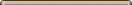
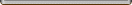
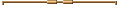
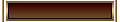
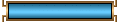
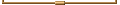

Menu G5 Examples: Using images in menu
To use images in menu is just about setting up the background images in the CSS classes for the menu pads, the menu items, the separators, the menu icons and the sub-menu tags.
Following are four examples, click to switch them on or off:
| [switch] | [switch] | [switch] | [switch] | ||||
These menus are using the same menu content, which defines separators as the first item and the last item of each menu level.
For the first menu on the left side, we have the following images:
... background image for the first separator of the top-menu
... background image for the menu items
 ... background image for the first separator of the sub-menus
 ... background image for the last separator of the top-menu and sub-menus
For the second menu, we have the following image:
... repeating background image for the pad
For the third menu, we have the following images:
 ... background image for the first separator of a menu
 ... background image for the menu items at normal stage
 ... background image for the menu items at highlighted stage
 ... background image for the last separator of a menu
... background image for the sub-menu pad
And for the last menu on the right side, we just use a transparent GIF as the background image for the menu icons, then use different background colors for normal stage and highlighted stage.
# # #